Display
La sección de Display está diseñada para mostrar todos los procesos del sistema en una pantalla de monitor para tener una referencia del estado actual del servicio en un salón amplio, ya que en esta sección no se pueden manipular dichos valores o información solo se pueden ver. Esta sección cuenta con dos opciones:
Presentaciones
Esta opción contiene la vista de los procesos de las llamadas entrantes y salientes del sistema.
Display de llamadas entrantes
El display de llamadas entrantes permite visualizar de manera general y en tiempo real los indicadores más relevantes para un Call Center en modalidad Inbound. Es una herramienta diseñada para proyectarse en monitores y se muestre a todo el personal.
Este display está compuesto por un menú superior, menú inferior y la pizarra de indicadores.
Menú superior
Se encuentra ubicado en la parte superior de la ventana y en él podemos divisar: el logo de ProSer, el nombre del módulo, las opciones de las vistas que conforman el módulo, el nombre del usuario, el estado de conexión y la hora actual.
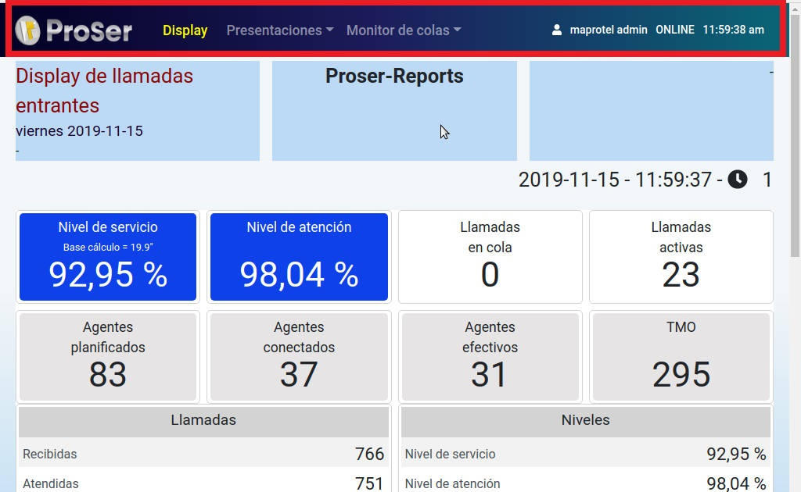
Menú inferior
Se ubica debajo del menú superior y está dividido en tres (03) secciones que describen, de manera general, la vista actual. De izquierda a derecha: sección uno, sección dos y sección tres.
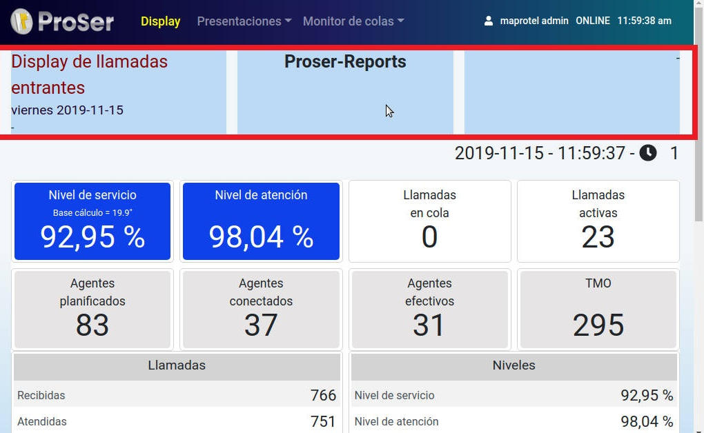
Sección uno
En esta sección del menú inferior encontramos la leyenda que representa la información expuesta en el módulo. En el orden de arriba hacia abajo se encuentran las siguientes descripciones: Nombre de la vista del módulo, fecha de la información, rango de tiempo de la información.
Sección dos
Dentro de la sección dos se puntualiza el nombre del Call Center del cual hace referencia la información mostrada en la vista.
Sección tres
No aplica para esta vista.
Pizarra de indicadores
La pizarra de indicadores es la sección más relevante, ya que en ella se plasma toda la información fundamental de la vista. Esta sección, a su vez, se conforma por seis (06) grupos de información: destacados, llamadas, niveles, tiempos, agentes conectados y auxiliares asignaciones.
Destacados
Los destacados puntualizan los indicadores de mayor envergadura para la toma de decisiones por parte del supervisor o gerente. Este grupo se conforma por: nivel del servicio, nivel de atención,llamadas en cola,llamadas activas, agentes planificados, agentes conectados, agentes efectivos, tiempo medio de operación (TMO).
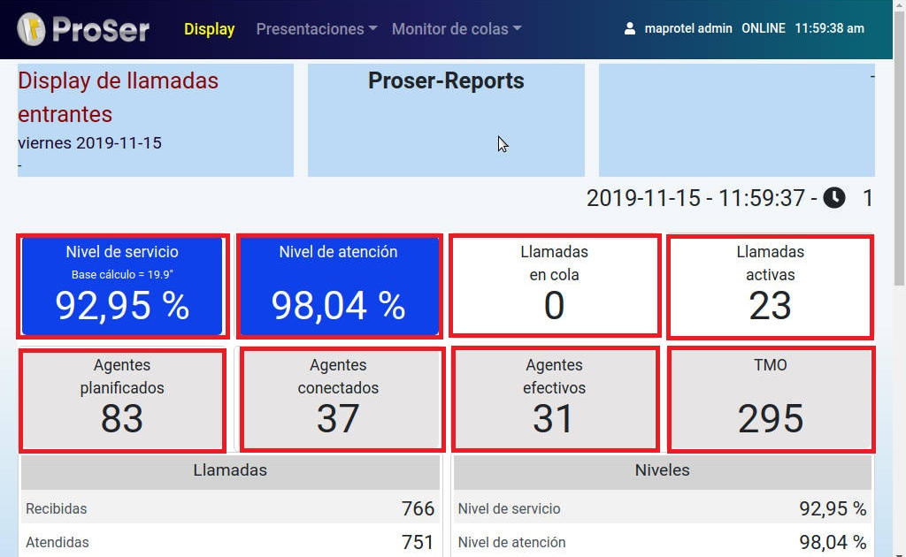
Nivel de servicio
Indica el porcentaje de llamadas contestadas antes de finalizar el tiempo ideal de atención, conocido comúnmente como umbral (normalmente es de 20 segundos). Este indicador colorea su contenido de acuerdo a los porcentajes configurados en la escala para cada color.
Nivel de atención
Indica el porcentaje que representa las llamadas atendidcon respecto a la cantidad de llamadas recibidas. Este indicadocolorea su contenido de acuerdo a los porcentajes configurados en la escala para cada color.
Llamadas en cola
Indica la cantidad de llamadas que encuentran esperanen ese momento, en la cola para ser atendidas.
Llamadas activas
Indica la cantidad de llamadas que están siendo atendiden ese momento.
Agentes planificados
Indica la cantidad de agentes que se deben conectar en transcurso del día, turno o guardia (según la configuración del display).
Agentes conectados
Indica la cantidad de agentes que se encuentran conectados en ese instante.
Agentes efectivos
Indica la cantidad de agentes que se encuentran operativos (disponibles u ocupados) en ese instante.
Tiempo medio de operación (TMO)
Indica el tiempo promedio que dura un agente atendienduna llamada.
Llamadas
El grupo de llamadas hace referencia a las métricas de todo lo relacionado con la cantidad de llamadas en la operación. Este grupo lo conforman los siguientes indicadores: recibidas, atendidas, abandonadas,cortas, atendidas en menos de, atendidas en más de, colgadas por agente y pérdidas.
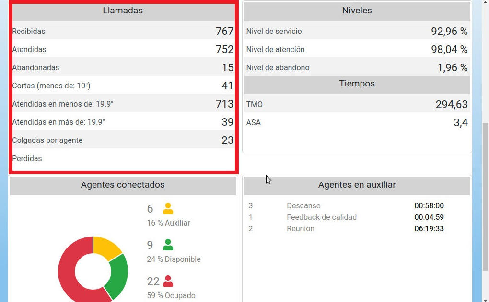
Recibidas
Indica la cantidad de llamadas recibidas hasta ese instante.
Atendidas
Indica la cantidad de llamadas atendidas hasta ese instante.
Abandonadas
Indica la cantidad de llamadas abandonadas hasta ese instante.
Cortas
Indica la cantidad de llamadas finalizadas antes de un valor de tiempo previamente definido por la empresa o el cliente (usualmente el valor de tiempo corresponde a los 10 segundos).
Atendidas en menos de
Indica la cantidad de llamadas atendidas antes de culminar el tiempo ideal de atención (umbral).
Atendidas en más de
Indica la cantidad de llamadas atendidas luego de culminar el tiempo ideal de atención (umbral).
Colgadas por agente
Indica la cantidad de llamadas culminadas por los agentes,es decir cuando la llamada finaliza porque el agente colgó primero que el llamante.
Perdidas
Indica la cantidad de llamadas que no son atendidas por un agente SIP y se pierden.
Niveles
El grupo niveles expresa los indicadores de eficiencia del call center: nivel de servicio, nivel de atención y nivel de abandono.
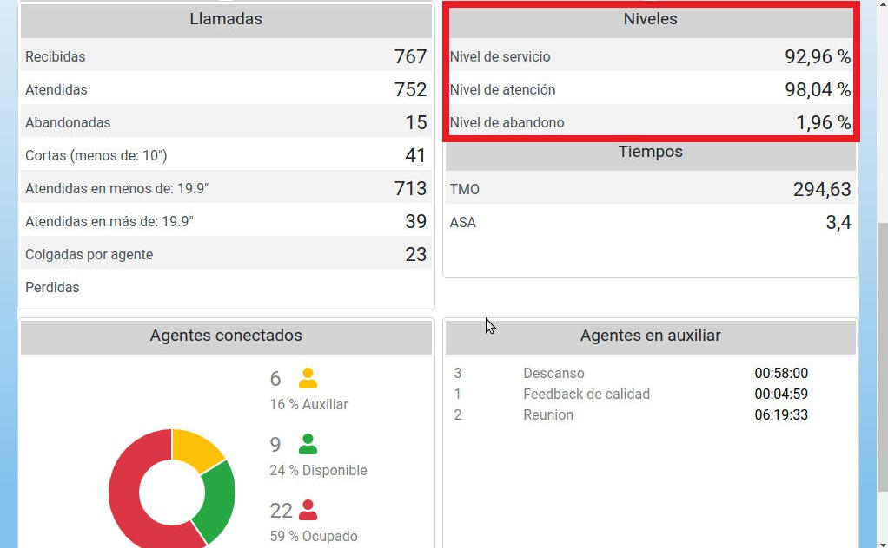
Nivel de servicio
Indica el porcentaje de llamadas contestadas antes de finalizar el tiempo ideal de atención, conocido comúnmente como umbral (normalmente es de 20 segundos).
Nivel de atención
Indica el porcentaje que representa las llamadas atendidascon respecto a la cantidad de llamadas recibidas.
Nivel de abandono
Indica el porcentaje que representa la cantidad de llamadas no contestadas con respecto a las llamadas recibidas.
Tiempos
El grupo tiempos puntualiza todos aquellos indicadores que su cálculo se basa en el tiempo, siempre expresados en segundos. Los indicadores de tiempo son: tiempo medio de operación, tiempo medio de espera, máxima espera en cola, máxima espera.
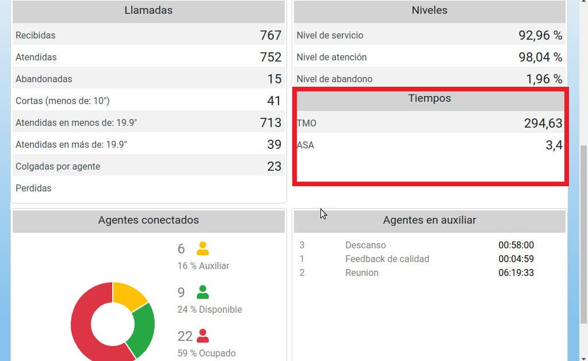
Tiempo medio de operación (TMO)
Indica el tiempo promedio que dura un agente atendiendo una llamada.
Tiempo medio de espera (ASA)
Indica el tiempo promedio que transcurre desde que las llamadas ingresan a la cola hasta ser atendidas.
Máxima espera en cola
Indica el valor máximo de tiempo de espera de una llamada en la cola en ese instante.
Máximo espera
Indica el valor total del tiempo de espera de las llamadas que han sido recibidas.
Agentes conectados
Muestra un gráfico que expresa el estado actual de los agentes en ese instante.
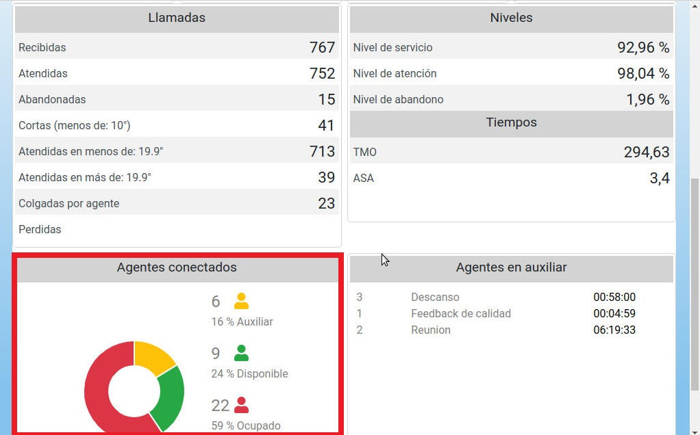
Agentes en auxiliar/asignación
Cuando hay agentes en break, se divisa dentro de este grupo un resumen de: la cantidad de agentes en break, el tipo de break y el tiempo acumulado en ese break.
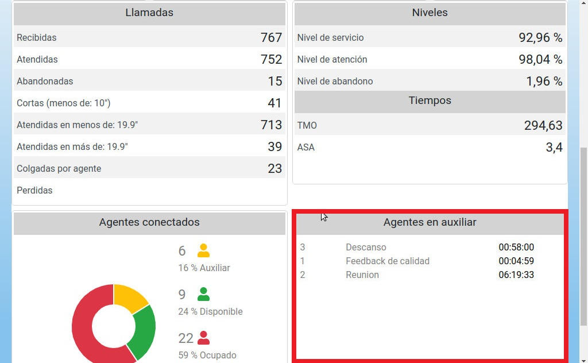
Display de llamadas salientes
El display de llamadas salientes permite visualizar de manera general y en tiempo real los indicadores más relevantes para un Call Center en modalidad Outbound. Es una herramienta diseñada para proyectarse en monitores y se muestre a todo el personal.
Este display está compuesto por un menú superior, menú inferior y la pizarra de indicadores.
Menú superior
Se encuentra ubicado en la parte superior de la ventana y en él podemos divisar: el logo de ProSer, el nombre del módulo, las opciones de las vistas que conforman el módulo, el nombre del usuario, el estado de conexión y la hora actual.
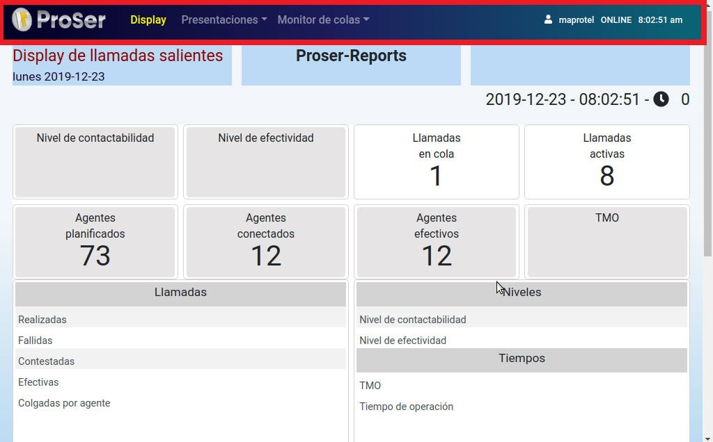
Menú inferior
Se ubica debajo del menú superior y está dividido en tres (03) secciones que describen, de manera general, la vista actual. De izquierda a derecha: sección uno, sección dos y sección tres.
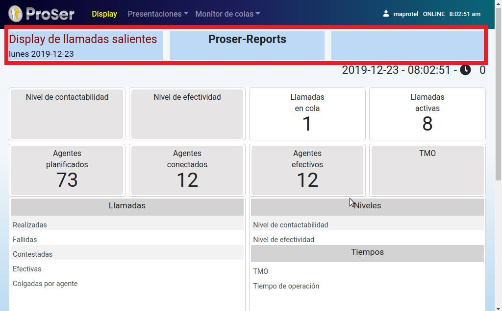
Sección uno
En esta sección del menú inferior encontramos la leyenda que representa la información expuesta en el módulo. En el orden de arriba hacia abajo se encuentran las siguientes descripciones: Nombre de la vista del módulo, fecha de la información, rango de tiempo de la información.
Sección dos
Dentro de la sección dos se puntualiza el nombre del Call Center del cual hace referencia la información mostrada en la vista.
Sección tres
No aplica para esta vista.
Pizarra de indicadores
La pizarra de indicadores es la sección más relevante, ya que en ella se plasma toda la información fundamental de la vista. Esta sección, a su vez, se conforma por seis (06) grupos de información: destacados, llamadas, niveles, tiempos, agentes conectados y auxiliares asignaciones.
Destacados
Los destacados puntualizan los indicadores de mayor envergadura para la toma de decisiones por parte del supervisor o gerente. Este grupo se conforma por: nivel del servicio, nivel de atención,llamadas en cola,llamadas activas, agentes planificados, agentes conectados, agentes efectivos, tiempo medio de operación (TMO).
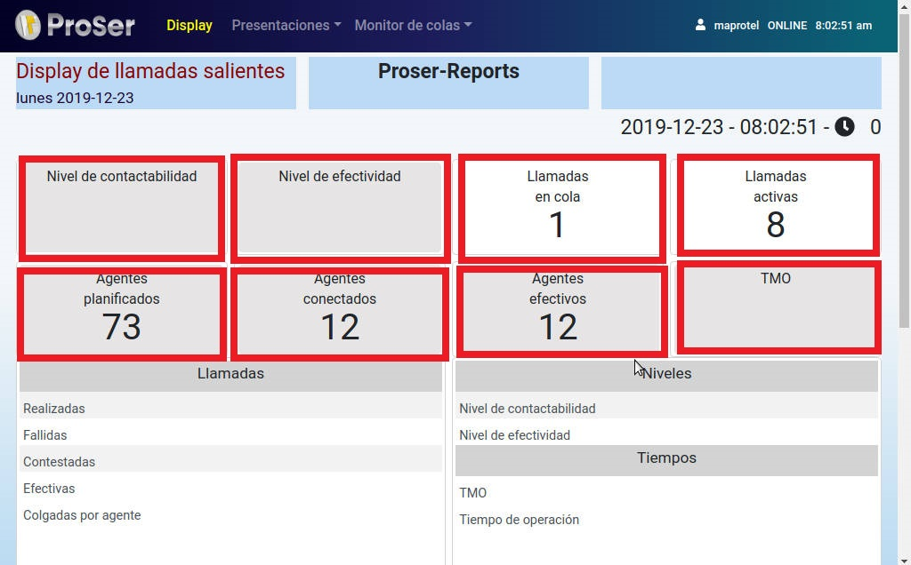
Nivel de contactabilidad
Indica el porcentaje que representa la cantidad de llamadas contestadas por el destinatario con respecto a la cantidad de llamadas realizadas. Este indicador colorea su contenido de acuerdo a los porcentajes configurados en la escala para cada color.
Nivel de efectividad
Indica el porcentaje que representa las llamadas efectivas con respecto a la cantidad de llamadas realizadas. Este indicador colorea su contenido de acuerdo a los porcentajes configurados en la escala para cada color.
Llamadas en cola
Indica la cantidad de llamadas que encuentran esperando,en ese momento, en la cola para ser atendidas.
Llamadas activas
Indica la cantidad de llamadas que están siendo realizadas en ese momento.
Agentes planificados
Indica la cantidad de agentes que se deben conectar en eltranscurso del día, turno o guardia (según la configuración del display).
Agentes conectados
Indica la cantidad de agentes que se encuentran conectados en ese instante.
Agentes efectivos
Indica la cantidad de agentes que se encuentran operativos (disponibles u ocupados) en ese instante.
Tiempo medio de operación (TMO)
Indica el tiempo promedio que dura un agente realizando una llamada.
Llamadas
El grupo de llamadas hace referencia a las métricas de todo lo relacionado con la cantidad de llamadas en la operación. Este grupo lo conforman los siguientes indicadores: realizadas, fallidas, contestadas,efectivas y colgadas por agente.
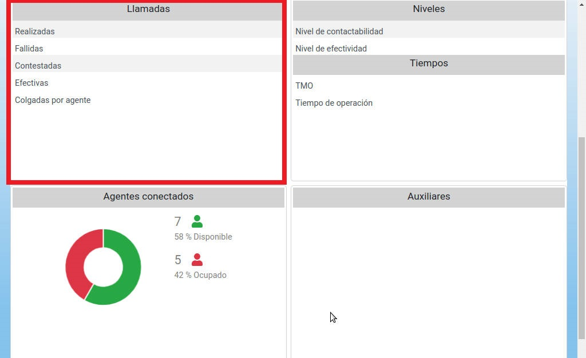
Realizadas
Indica la cantidad de llamadas realizadas por los agentes hasta ese instante.
Fallidas
Indica la cantidad de llamadas que no lograron establecer conexión con el destinatario.
Contestadas
Indica la cantidad de llamadas que lograron establecer conexión con el destinatario.
Efectivas
Indica la cantidad de llamadas que lograron con éxito el propósito de las mismas.
Colgadas por agente
Indica la cantidad de llamadas culminadas por los agentes,es decir, cuando la llamada finaliza porque el agente colgó primero que el llamante.
Niveles
El grupo niveles expresa los indicadores de eficiencia del call center: nivel de contactabilidad y nivel de efectividad.
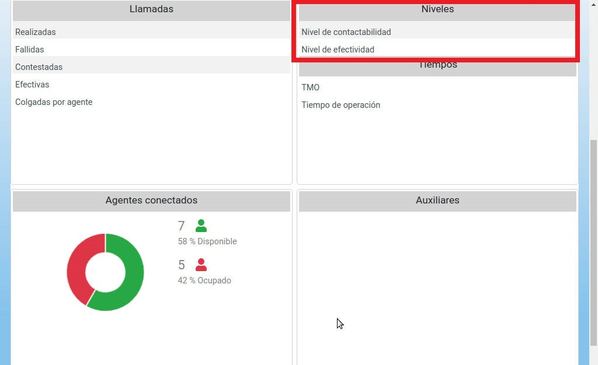
Nivel de contactabilidad
Indica el porcentaje que representa la cantidad de llamadas contestadas por el destinatario con respecto a la cantidad de llamadas realizadas.
Nivel de efectividad
Indica el porcentaje que representa las llamadas efectivas con respecto a la cantidad de llamadas realizadas.
Tiempos
El grupo tiempos puntualiza todos aquellos indicadores que su cálculo se basa en el tiempo, siempre expresados en segundos. Los indicadores de tiempo son: tiempo medio de operación, tiempo de operación.
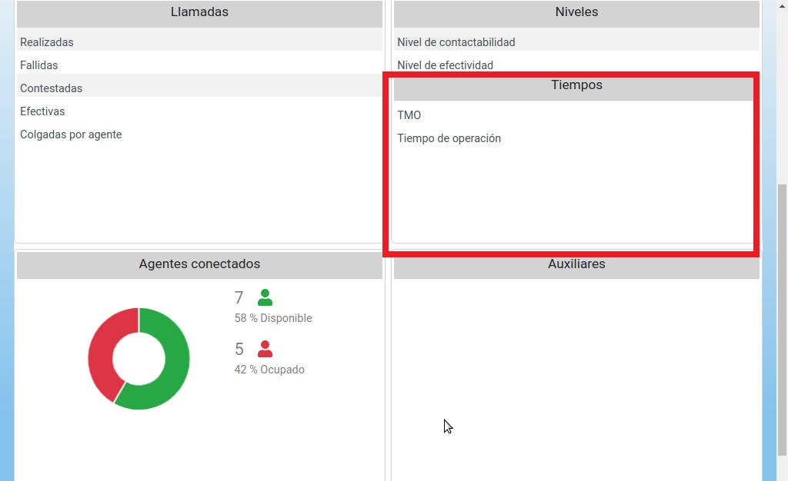
Tiempo medio de operación (TMO)
Indica el tiempo promedio que dura un agente realizando una llamada.
Tiempo de operación
Indica el tiempo de operación acumulado hasta ese instante.
Agentes conectados
Muestra un gráfico que expresa el estado actual de los agentes en ese instante.
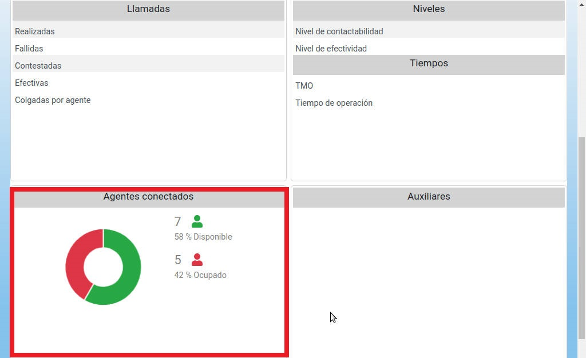
Agentes en auxiliar/asignación
Cuando hay agentes en break, se divisa dentro de este grupo un resumen de: la cantidad de agentes en break, el tipo de break y el tiempo acumulado en ese break.
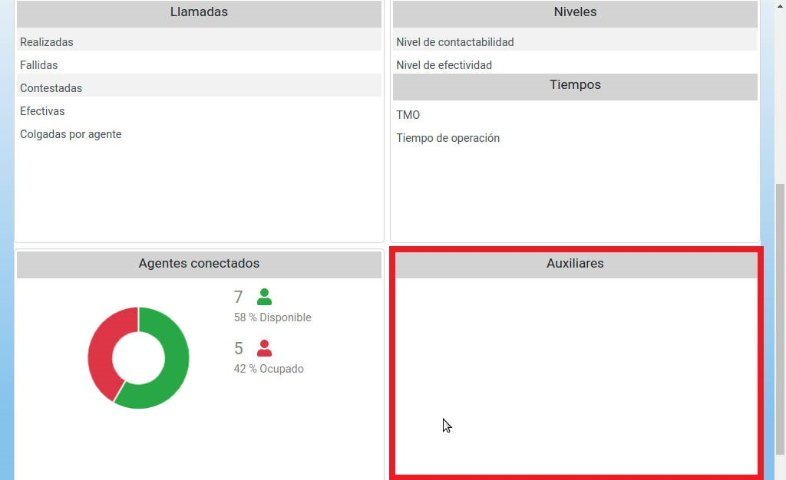
Monitor de colas
Esta opción contiene las vistas de los monitores de llamadas, de agentes y de los indicadores.
Monitor de llamadas
El monitor de llamadas es una herramienta que refleja el comportamiento, en tiempo real, de las llamadas entrantes en las colas activas. La información mostrada se basa en estadísticas que se actualizan cada cinco (05) segundos, ofreciendo al supervisor del Call Center la oportunidad de hacer comparaciones rápidas que permitan mantener o cambiar el curso (según sea el caso) del nivel de atención y nivel de servicio para una mejor respuesta al cliente. Toda la información mostrada en el monitor corresponde al día actual, no maneja estadísticas históricas.
Esta vista está conformada por un menú superior, un menú inferior y una tabla de métricas.
Menú superior
Se encuentra ubicado en la parte superior de la ventana y en él podemos divisar: el logo de ProSer, el nombre del módulo, las opciones de las vistas que conforman el módulo, el nombre del usuario, el estado de conexión y la hora actual.
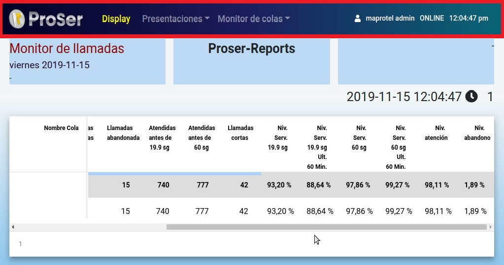
Menú inferior
Se ubica debajo del menú superior y está dividido en tres (03) secciones que describen, de manera general, la vista actual. De izquierda a derecha: sección uno, sección dos y sección tres.
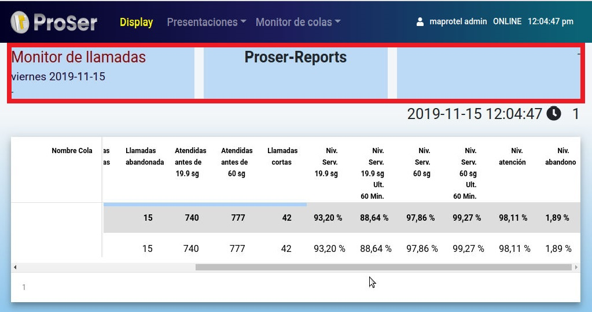
Sección uno
En esta sección del menú inferior encontramos la leyenda que representa la información expuesta en el módulo. En el orden de arriba hacia abajo se encuentran las siguientes descripciones: Nombre de la vista del módulo, fecha de la información.
Sección dos
Dentro de la sección dos se puntualiza el nombre del Call Center del cual hace referencia la información mostrada en la vista.
Sección tres
No aplica para esta vista.
Tabla de métricas
Dentro de la tabla de métricas se ubica la información que contiene lasestadísticas, por cada cola activa, que componen al monitor de llamadas y las cuales se actualizan cada cinco (05) segundos. Las métricas son:
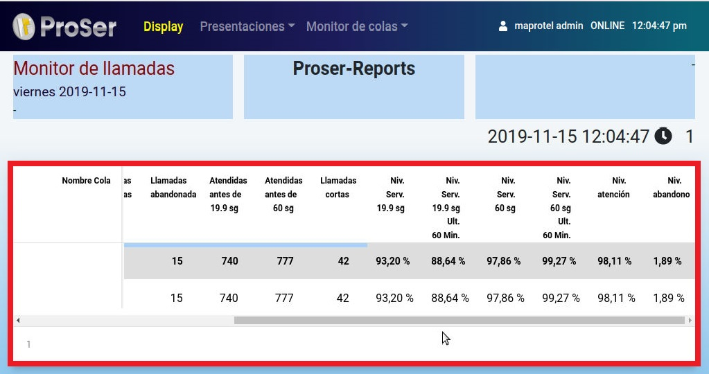
Nombre Cola
Indica el nombre de la cola que se encuentra activa durante la jornada.
Número cola
Indica el número de la cola que se encuentra activa durante la jornada.
T. Máx. Actual espera (sg)
Indica el tiempo máximo que estuvo una llamada esperando en la cola para ser atendida.
T. Máx. Actual contestar (sg)
Indica el tiempo máximo que estuvo una llamada esperando en la cola para ser atendida y fue atendida.
T. Máx. Actual abandono (sg)
Indica el tiempo máximo que estuvo una llamada esperando en la cola para ser atendida y no fue atendida.
Llamadas recibidas
Indica la cantidad de llamadas recibidas por cola hasta ese instante.
Llamadas atendidas
Indica la cantidad de llamadas atendidas por cola hasta ese instante.
Llamadas abandonadas
Indica la cantidad de llamadas abandonadas por cola hasta ese instante.
Atendidas antes de (umbral)
Indica la cantidad de llamadas atendidas antes de culminar el tiempo ideal de atención (umbral). El valor del umbral usualmente es de 20 segundos, a menos que la empresa decida configurar un umbral diferente.
Atendidas antes de 60 sg
Indica la cantidad de llamadas atendidas antes de sesenta (60)segundos en tiempo de espera en la cola.
Llamadas cortas
Indica la cantidad de llamadas finalizadas antes de un valor de tiempo previamente definido por la empresa o el cliente (usualmente elvalor de tiempo corresponde a los 10 segundos).
Nivel Serv. (umbral)
Indica el porcentaje de llamadas contestadas antes de finalizar el tiempo ideal de atención, conocido comúnmente como umbral.
Nivel Serv. (umbral) Ult. 60 Min.
Indica el porcentaje de llamadas contestadas antes de finalizar el tiempo ideal de atención, conocido comúnmente como umbral, en la última hora.
Nivel Serv. 60 sg
Indica el porcentaje de llamadas contestadas antes de finalizar sesenta (60) segundos en tiempo de espera en la cola.
Nivel Serv. 60 sg Ult. 60 Min.
Indica el porcentaje de llamadas contestadas antes de finalizar sesenta (60) segundos en tiempo de espera en la cola, en la última hora.
Niv. atención
Indica el porcentaje que representa las llamadas atendidas con respecto a la cantidad de llamadas recibidas.
Niv. abandono
Indica el porcentaje que representa la cantidad de llamadas no contestadas con respecto a las llamadas recibidas.
Monitor de agentes
Es una funcionalidad que señala la actividad de los agentes, en tiempo real, por cada cola creada en el Call Center. El comportamiento de los agentes se actualiza cada cinco (05) segundos, permitiendo al supervisor del Call Center hacer una comparación rápida entre la cantidad de llamadas activas y la cantidad de agentes disponibles en cada cola.
Toda la información mostrada en el monitor corresponde al día actual, nomaneja estadísticas históricas. Esta vista está conformada por un menú superior, un menú inferior y una tabla de agentes.
Menú superior
Se encuentra ubicado en la parte superior de la ventana y en él podemos divisar: el logo de ProSer, el nombre del módulo, las opciones de las vistas que conforman el módulo, el nombre del usuario, el estado de conexión y la hora actual.
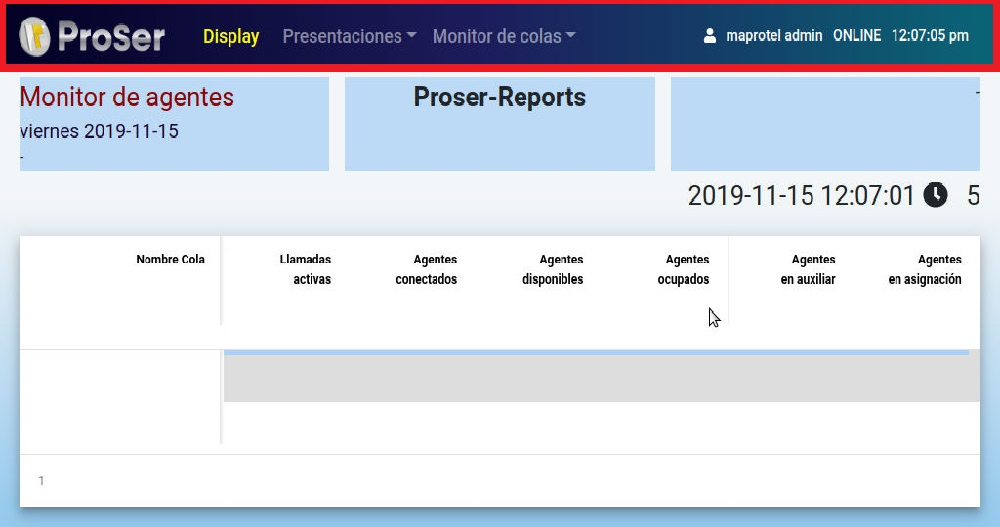
Menú inferior
Se ubica debajo del menú superior y está dividido en tres (03) secciones que describen, de manera general, la vista actual. De izquierda a derecha: sección uno, sección dos y sección tres.
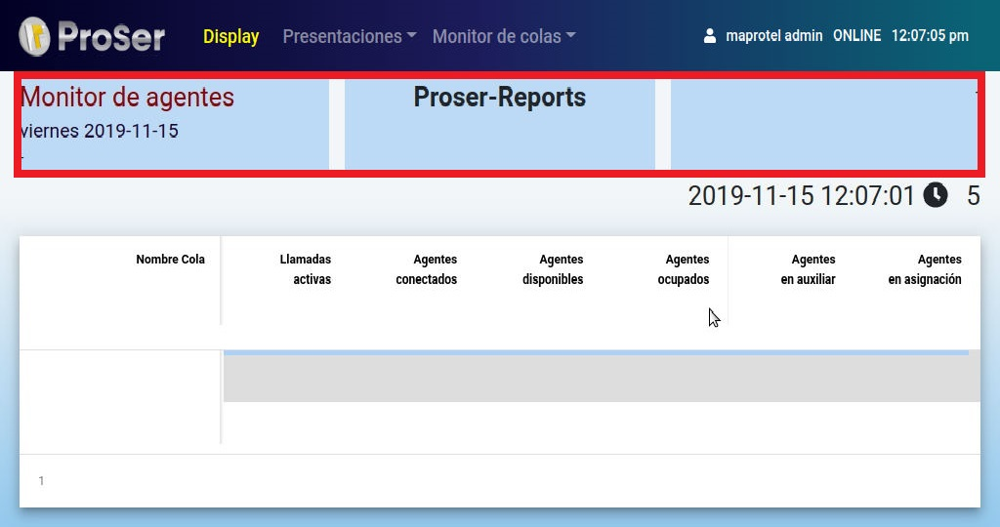
Sección uno
En esta sección del menú inferior encontramos la leyenda que representa la información expuesta en el módulo. En el orden de arriba hacia abajo se encuentran las siguientes descripciones: Nombre de la vista del módulo, fecha de la información.
Sección dos
Dentro de la sección dos se puntualiza el nombre del Call Center del cual hace referencia la información mostrada en la vista.
Sección tres
No aplica para esta vista.
Tabla de agentes
Dentro de la tabla de agentes se ubica la información que contiene las estadísticas, por cada cola activa, que componen al monitor de agentes y las cuales se actualizan cada cinco (05)segundos.
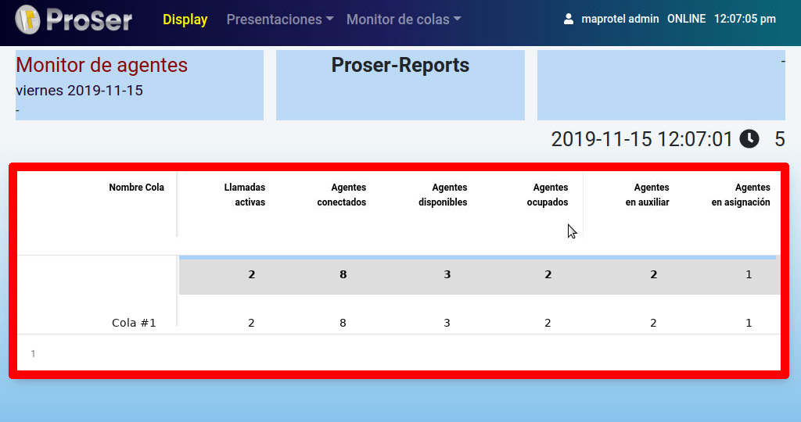
Nombre Cola
Indica el nombre de la cola.
Llamadas activas
Indica la cantidad de llamadas activas, por cada cola, en ese instante.
Agentes conectados
Indica la cantidad de agentes conectados, por cada cola, en ese instante.
Agentes disponibles
Indica la cantidad de agentes disponibles, por cada cola, en ese instante.
Agentes ocupados
Indica la cantidad de agentes ocupados, por cada cola, en ese instante.
Agentes en auxiliar
Indica la cantidad de agentes en auxiliar, por cada cola, en ese instante.
Agentes en asignación
Indica la cantidad de agentes en asignación, por cada cola, en ese instante.
Monitor de indicadores
El monitor de indicadores permite visualizar, en tiempo real, la estadísticas delos indicadores más relevantes de las llamadas entrantes en las colas activas. La información mostrada se basa en estadísticas que se actualizan cada cinco (05)segundos. Toda la información mostrada en el monitor corresponde al día actual, no maneja estadísticas históricas.
Esta vista está conformada por un menú superior, un menú inferior y una tabla de métricas.
Menú superior
Se encuentra ubicado en la parte superior de la ventana y en él podemos divisar: el logo de ProSer, el nombre del módulo, las opciones de las vistas que conforman el módulo, el nombre del usuario, el estado de conexión y la hora actual.
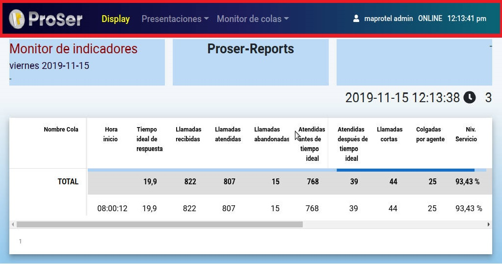
Menú inferior
Se ubica debajo del menú superior y está dividido en tres (03) secciones que describen, de manera general, la vista actual. De izquierda a derecha: sección uno, sección dos y sección tres.
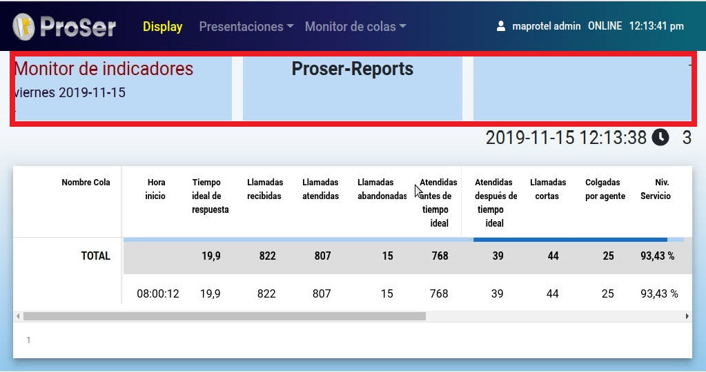
Sección uno
En esta sección del menú inferior encontramos la leyenda que representa la información expuesta en el módulo. En el orden de arriba hacia abajo se encuentran las siguientes descripciones: Nombre de la vista del módulo, fecha de la información.
Sección dos
Dentro de la sección dos se puntualiza el nombre del Call Center del cual hace referencia la información mostrada en la vista.
Sección tres
No aplica para esta vista.
Tabla de métricas
Dentro de la tabla de métricas se ubica la información que contiene las estadísticas, por cada cola activa, que componen al monitor de llamadas y las cuales se actualizan cada cinco (05) segundos. Las métricas son:
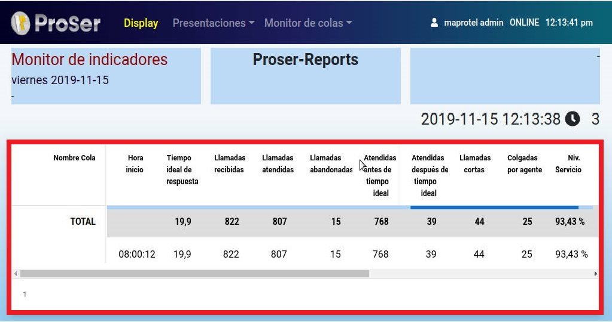
Nombre Cola
Indica el nombre de la cola que se encuentra activa durante la jornada.
Hora inicio
Indica la hora en la que se recibió la primera llamada.
Tiempo ideal de respuesta
Indica el valor configurado, en segundos, como tiempo ideal de respuesta (umbral).
Llamadas recibidas
Indica la cantidad de llamadas recibidas por cola hasta ese instante.
Llamadas atendidas
Indica la cantidad de llamadas atendidas por cola hasta ese instante.
Llamadas abandonadas
Indica la cantidad de llamadas abandonadas por cola hasta ese instante.
Atendidas antes de tiempo ideal
Indica la cantidad de llamadas atendidas antes de culminar el tiempo ideal de atención (umbral). El valor del umbral usualmente es de 20 segundos, a menos que la empresa decida configurar un umbral diferente.
Atendidas después de tiempo ideal
Indica la cantidad de llamadas atendidas luego de culminar el tiempo ideal de atención (umbral).
Llamadas cortas
Indica la cantidad de llamadas finalizadas antes de un valor de tiempo previamente definido por la empresa o el cliente (usualmente el valor de tiempo corresponde a los 10 segundos).
Colgadas por agente
Indica la cantidad de llamadas culminadas por los agentes, es decir, cuando la llamada finaliza porque el agente colgó primero que el llamante.
Nivel Servicio
Indica el porcentaje de llamadas contestadas antes de finalizar el tiempo ideal de atención, conocido comúnmente como umbral.
Niv. atención
Indica el porcentaje que representa las llamadas atendidas con respecto a la cantidad de llamadas recibidas.
Niv. abandono
Indica el porcentaje que representa la cantidad de llamadas no contestadas con respecto a las llamadas recibidas.
Seg. Operación
Indica la sumatoria de tiempo de operación de las llamadas, en segundos.
T. Operación
Indica la sumatoria de tiempo de operación de las llamadas: en horas, minutos y segundos.
Seg. Espera
Indica la sumatoria de tiempo de espera de las llamadas, en segundos.
T. Espera
Indica la sumatoria de tiempo de espera de las llamadas: en horas, minutos y segundos.
TMO
Indica el tiempo promedio que dura un agente atendiendo una llamada.
ASA
Indica el tiempo promedio que transcurre desde que las llamadas ingresan a la cola hasta ser atendida.